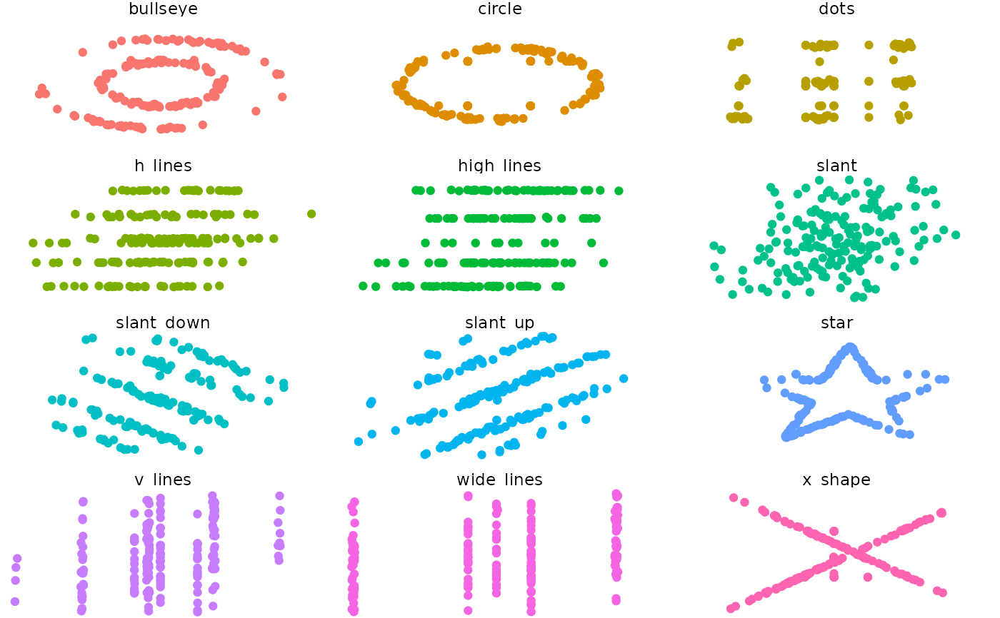

R/Datasaurus-package.r
twelve_from_slant_alternate_long.RdA dataset demonstrating the utility of visualization. These 12 datasets are equal in non-parametric measures: median, interquartile range, and Spearman's rank correlation.
twelve_from_slant_alternate_long
A data frame with 2184 rows and 3 variables:
dataset: the dataset the data are from
x: x-values
y: y-values
Matejka, J., & Fitzmaurice, G. (2017). Same Stats, Different Graphs: Generating Datasets with Varied Appearance and Identical Statistics through Simulated Annealing. CHI 2017 Conference proceedings: ACM SIGCHI Conference on Human Factors in Computing Systems. Retrieved from https://www.autodeskresearch.com/publications/samestats.
if(require(ggplot2)){ ggplot(twelve_from_slant_alternate_long, aes(x=x, y=y, colour=dataset))+ geom_point()+ theme_void()+ theme(legend.position = "none")+ facet_wrap(~dataset, ncol=3) }